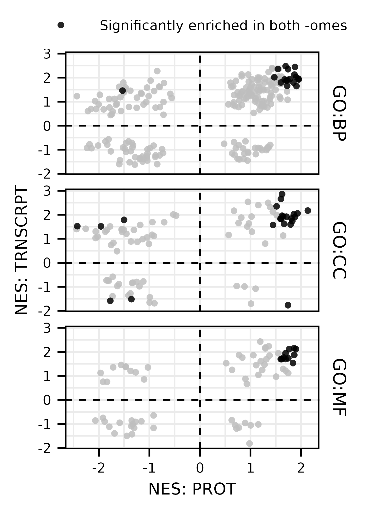
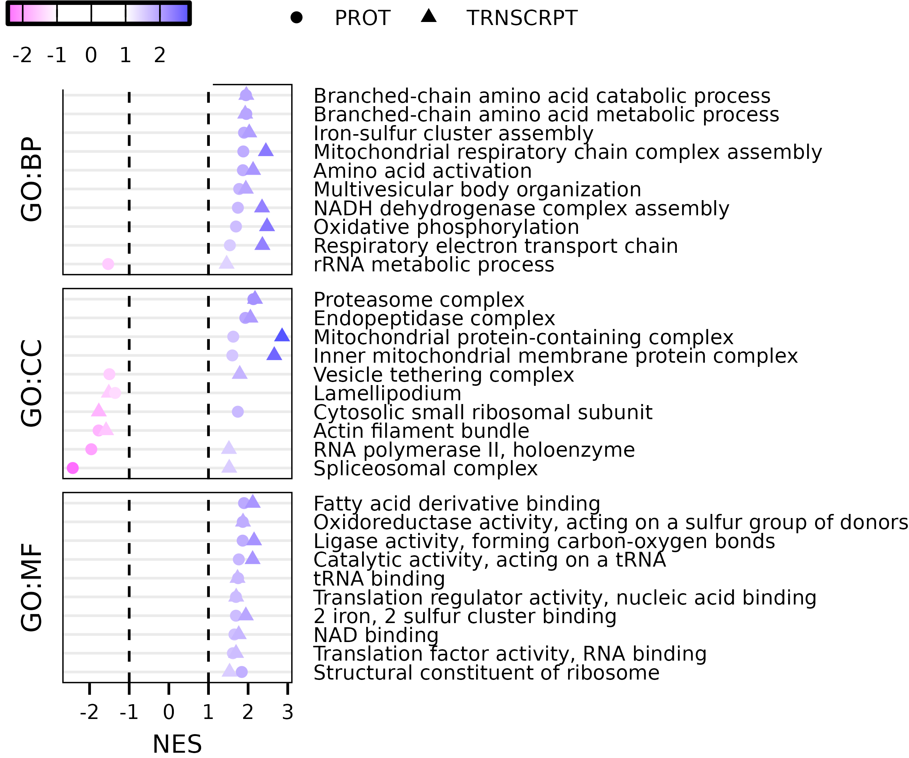

vignettes/articles/plot_FGSEA_male_vs_female_summary.Rmd
plot_FGSEA_male_vs_female_summary.RmdThis article generates scatterplots of the top FGSEA terms from the male vs. female comparisons (Fig. 2B, C).
library(MotrpacRatTraining6moWATData)
library(MotrpacRatTraining6moWAT)
library(dplyr)
library(purrr)
library(tidyr)
library(data.table)
library(ggplot2)
library(grid)
save_plots <- dir.exists(paths = file.path("..", "..", "plots"))
omes <- c("PROT", "TRNSCRPT")
res <- lapply(omes, function(ome) {
file <- paste0(ome, "_FGSEA")
fgsea_res <- get(file)
pluck(fgsea_res, "MvF_SED") %>%
mutate(ome = ome)
})
common_sets <- intersect(res[[1]]$pathway, res[[2]]$pathway)
res_df <- rbindlist(res) %>%
dplyr::select(ome, contrast, gs_subcat, pathway,
gs_description, padj, NES) %>%
pivot_wider(id_cols = c(contrast:gs_description),
names_from = ome,
values_from = c(padj, NES),
names_sep = ".") %>%
filter(!(is.na(NES.PROT) | is.na(NES.TRNSCRPT))) %>%
mutate(both_signif = padj.PROT < 0.05 & padj.TRNSCRPT < 0.05,
quadrant = case_when(NES.PROT > 0 & NES.TRNSCRPT > 0 ~ "Q1",
NES.PROT < 0 & NES.TRNSCRPT > 0 ~ "Q2",
NES.PROT < 0 & NES.TRNSCRPT < 0 ~ "Q3",
NES.PROT > 0 & NES.TRNSCRPT < 0 ~ "Q4")) %>%
arrange(both_signif)
top_terms <- res_df %>%
filter(both_signif) %>%
dplyr::select(-both_signif) %>%
group_by(pathway, gs_subcat, quadrant, gs_description) %>%
rowwise() %>%
mutate(NES_mean = mean(abs(c(NES.PROT, NES.TRNSCRPT)))) %>%
ungroup() %>%
group_by(gs_subcat) %>%
arrange(-NES_mean) %>%
mutate(not_Q1 = sum(quadrant != "Q1"),
n = 10 - not_Q1) %>%
group_by(gs_subcat, quadrant) %>%
mutate(idx = 1:n()) %>%
filter((idx <= not_Q1 & quadrant != "Q1") |
(idx <= n & quadrant == "Q1")) %>%
pull(pathway)
p1 <- ggplot(res_df) +
geom_vline(xintercept = 0, lty = "dashed",
color = "black", linewidth = 0.3) +
geom_hline(yintercept = 0, lty = "dashed",
color = "black", linewidth = 0.3) +
geom_point(aes(x = NES.PROT, y = NES.TRNSCRPT,
color = both_signif),
size = 0.8, shape = 16, alpha = 0.85) +
facet_grid(gs_subcat ~ ., space = "free_y") +
labs(x = "NES: PROT", y = "NES: TRNSCRPT") +
scale_color_manual(name = NULL,
values = c("black", "grey"),
labels = c("Significantly enriched in both -omes"),
breaks = c(TRUE), na.value = "grey") +
theme_pub() +
theme(legend.position = "top",
legend.margin = margin(t = 0, b = -5),
legend.box.margin = margin(b = -5, t = -5),
axis.line = element_line(color = NA),
panel.border = element_rect(color = "black", fill = NA),
strip.background = element_blank())
p1
ggsave(file.path("..", "..", "plots", "FGSEA_NES_scatterplot.pdf"), p1,
height = 2.6, width = 1.9, family = "ArialMT")
p2 <- res_df %>%
filter(pathway %in% top_terms) %>%
pivot_longer(cols = c(contains("NES"), contains("padj"))) %>%
separate(col = name, into = c("measure", "ome"),
sep = "\\.", remove = TRUE) %>%
pivot_wider(names_from = measure,
values_from = value) %>%
arrange(NES) %>%
mutate(gs_description = factor(gs_description,
levels = unique(gs_description))) %>%
ggplot() +
geom_vline(xintercept = c(-1, 1), color = "black",
lty = "dashed", linewidth = 0.3) +
geom_point(aes(x = NES, y = gs_description,
shape = ome, color = NES),
size = 1) +
facet_grid(gs_subcat ~ ., scales = "free_y",
switch = "y", space = "free_y") +
scale_y_discrete(name = NULL,
position = "right") +
scale_color_gradientn(colors = c("#ff6eff", rep("white", 2), "#5555ff"),
values = scales::rescale(c(-2.5, -1, 1, 2.9))) +
scale_shape_manual(name = NULL, values = 16:17) +
guides(
color = guide_colorbar(barwidth = unit(0.6, "in"),
barheight = unit(0.07, "in"),
frame.colour = "black",
ticks.colour = "black", order = 1),
shape = guide_legend(title = NULL, order = 2,
keyheight = unit(7, "pt"),
keywidth = unit(7, "pt"))) +
theme_bw() +
theme(text = element_text(size = 6, color = "black"),
axis.text = element_text(color = "black"),
axis.title = element_text(color = "black"),
axis.ticks.y = element_blank(),
axis.ticks.x = element_line(color = "black", linewidth = 0.3),
axis.title.y = element_text(margin = margin(r = 10, unit = "pt")),
strip.background = element_blank(),
strip.text = element_text(size = 6.5, color = "black"),
panel.spacing.y = unit(3, "pt"),
panel.border = element_rect(fill = NA, color = "black",
linewidth = 0.3),
plot.margin = margin(t = 20, unit = "pt"),
legend.position = c(0.85, 1.1),
legend.direction = "horizontal",
legend.box = "horizontal",
legend.box.margin = margin(b = -5, unit = "pt"),
legend.title = element_text(size = 5.5,
color = "black"),
legend.text = element_text(size = 5,
color = "black"),
panel.grid = element_blank(),
panel.grid.major.y = element_line(linewidth = 0.3, color = "grey92"))
p2